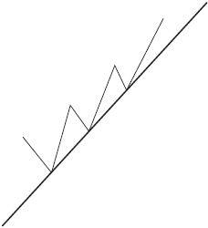
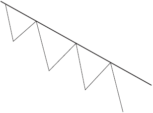
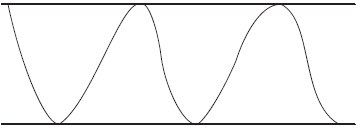
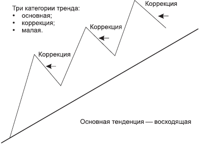

Технический анализ цен
 Технический анализ цен. Теория Доу. Все остальное – туман...
Технический анализ цен. Теория Доу. Все остальное – туман...
Любой бизнес имеет свои законы, требования, свод правил, которые обязательны к выполнению. Валютный рынок – не исключение.
Как я уже отмечала, Форекс имеет определенные закономерности, учитывая и применяя которые можно зарабатывать. И за основу этих законов взята теория Доу, основные принципы которой мы рассмотрим. Прежде всего выясним, что такое технический анализ.
Технический анализ – это анализ графиков валютных курсов с помощью специальных методов для получения прогноза дальнейшего движения цены. То есть с его помощью мы можем спрогнозировать, где может оказаться цена, понять, что на данном этапе нам выгоднее – покупать или продавать.
Итак, теория Доу основывается на следующих постулатах:
• цена учитывает все;
• история всегда повторяется;
• тренд – твой friend;
• различные индексы должны подтверждать друг друга;
• объемы торговли должны подтверждать характер тенденции;
• тенденция действует до тех пор, пока не появятся явные сигналы о ее изменении.
Давайте рассмотрим эти постулаты подробнее.
Цена учитывает всеЗдесь имеется в виду что все факторы – прогнозируемые и не прогнозируемые: экономические, природные, политические, антропогенные и т. д. – учитываются рынком и отражаются на динамике цен. Кто-то из политиков заявил об отставке, разразился экономический кризис, произошел теракт, землетрясение... Все это отразится на графике цен. Ничего себе перспектива! Вы озадачены? И хотя такие катаклизмы происходят редко, вам от этого не легче...
Что же теперь делать? Не входить в сделку? На самом деле все очень просто. Тренд – это движение, движение – это жизнь. У каждого из нас свой путь в жизни, свои принципы, устои, привычки. Но тем не менее есть нечто, что нас объединяет («Мы такие разные, но все-таки мы вместе» – помните?). И все мы подчиняемся определенным законам – нравственным, юридическим, моральным, закону Божьему, и цель всех этих законов – не ввергнуть мир в хаос. Мы подчиняемся тренду жизни, а цена подчиняется финансовому тренду. Не забывайте, что именно люди двигают цену, поэтому на нее они и проецируют свое поведение и принципы. Представьте себе такую ситуацию: вы ставите интересный эксперимент, смотрите спектакль в театре или банально поднимаетесь в лифте на свой этаж (предвкушая вечерний отдых), и в этот момент вырубают свет. Неожиданно! Может, авария на подстанции, может, электрик что-то напутал, а может, свет отключили за неуплату – типа энергетический кризис... Что вы будете делать? Можно впасть в истерику, биться головой о стену, встать в гордую позу, заявив, что в театр больше ни ногой, эксперименты ставить не будете, да и домой, пожалуй, не пойдете... А можно просто пересидеть эту ситуацию. Все равно все вернется на круги своя, рубильник включат, и жизнь (как и тренд) пойдет своим чередом. А для того чтобы такая ситуация не застала вас врасплох, необходимо позаботиться об аварийном освещении! На Форексе эта система аварийного освещения носит название стоп-лосс (ограничить потери). Об этом мы поговорим в главе 5.
История всегда повторяетсяДвижение цен исторически повторяется, что проявляется в повторении одинаковых фигур на графиках цен. То, что история всегда повторяется, мы выяснили еще в школе. Нам рассказывали, что бывает с теми, кто не усвоил ее уроки. И признаки революционной ситуации, когда «верхи не могут, а низы не хотят жить по-старому», являются неизбежными предвестниками грядущей революции. На Форексе все как в жизни. Перед большим движением график цены сначала разрисовывает определенные конфигурации, сигнализирующие о предстоящем событии, и приглашает внимательных трейдеров поучаствовать в столь знаменательном событии. Чем детальнее вы рассматриваете и анализируете историю валюты, тем очевиднее для вас будут подаваемые ею сигналы. Особенности этих сигналов мы подробно рассмотрим в главе 4.
Тренд – твой friendУ каждого из нас есть друзья. И своих друзей мы любим и принимаем такими, какие они есть, – со всеми их достоинствами и недостатками.
У вас их может быть несколько, друзей. Включите в этот список еще одного верного товарища, с которым надо идти рука об руку. Его зовут – «Тренд, просто Тренд». Это, как говорится, не просто любовь, а любовь с интересом. Не дай вам Бог встать на его пути и попробовать хотя бы что-то в нем изменить. Приведу наглядный пример.
Представьте себе могучее течение реки, а вы идете по берегу этой реки. Пешком до пункта вашего назначения надо идти часа три, а если сесть в лодку, а вот, кстати, и она – лодочная станция, то доплывете, скажем, за час. Река в этом случае поможет вам добраться гораздо быстрее к своей цели, чем если бы вы шли пешком. Она – ваш друг и помощник.
И вдруг в вашу голову приходит шальная мысль – повернуть течение реки вспять... Причем в том месте, где течение воды наиболее сильное! Здесь и сейчас, срочно!.. Вы представляете себя в роли героя-одиночки... «Пусть я один на один с этой стихией – будь что будет...» – твердите вы себе... и начинаете свою борьбу с течением реки. Что за бред, скажете вы, уважаемый читатель, это же – сизифов труд... И будете правы. Зачем поворачивать, если можно сесть в лодку и по течению доплыть с комфортом и с большей скоростью до пункта своего назначения. А насчет разворота течения можно подумать уже в более комфортной обстановке, взвесив без эмоций все «за» и «против», учитывая все особенности и изгибы реки...
Поэтому не изобретайте велосипед, не ищите приключений на свою голову и не усложняйте себе путь на Форексе. Тренд – это праздник для трейдера. И идти с ним гораздо выгоднее в одном направлении. И в моральном, и в финансовом плане. «Trend – is your friend».
Давайте теперь разберемся, что же такое тренд (его еще называют тенденцией).
Тренд {тенденция) –это направленное движение цены.
Движение происходит в соответствии с трендом, или тенденцией. Мы уже отмечали, что цена подчиняется тренду. Существуют тенденции восходящая, нисходящая и нейтральная (боковой коридор).
• При восходящей (бычьей)тенденции каждый последующий пик и каждый последующий спад выше предыдущего (рис. 2.1).

РИС. 2.1.Восходящий тренд
• При нисходящей (медвежьей)тенденции каждый последующий пик и каждый последующий спад ниже, чем предыдущий (рис. 2.2).

РИС. 2.2.Нисходящий тренд
• В боковом коридоре,или флэте,цена находится в определенном диапазоне – практически в горизонтальном коридоре. Обычно флэт является предвестником больших изменений – цена как бы аккумулирует силы для дальнейшего движения (рис. 2.3).

РИС. 2.3.Боковой коридор
Доу выделял три категории тренда (рис. 2.4):
• первичная (в литературе встречаются и другие названия, например основная, или долгосрочная);
• вторичная (она же корректирующая, или среднесрочная);
• малая (она же краткосрочная).
Наибольшее значение Доу уделял именно первичной тенденции, которая длится более года, а иногда и несколько лет.
Вторичная (промежуточная) тенденция является корректирующей (то есть имеющей противоположное направление) по отношению к основной и длится обычно от 3 недель до 3 месяцев. Подобные промежуточные поправки составляют от 1/3 до 2/3 (очень часто половину, или 50 %) расстояния, пройденного ценами во время предыдущей тенденции.

РИС. 2.4.Три категории тренда
Малые тенденции длятся не более 3 недель и представляют собой краткосрочные колебания в рамках промежуточной тенденции.
В развитии основной тенденции выделим 3 фазы:
• 1-я фаза (накопления): наиболее дальновидные и информированные инвесторы начинают покупать, так как вся неблагоприятная экономическая информация уже была учтена рынком;
• 2-я фаза наступает, когда в игру включаются те, кто использует технические методы следования за тенденциями. Цены уже поднялись, и экономическая информация становится оптимистичной;
• 3-я фаза (заключительная): в действие вступает широкая публика, на рынке начинается ажиотаж.
Догадайтесь, кто же из решивших поучаствовать в движении, скорее всего, окажется в зоне риска? Скорее всего, именно тот, кто поддался ажиотажу и встал в сделки «вдогонку».
Теперь перейдем к следующему постулату Доу.
Различные индексы должны подтверждать друг другаДоу полагал, что любой важный сигнал к повышению или понижению курса на рынке должен пройти в значениях нескольких индексов (то есть целесообразно принимать решение, получив одинаковый сигнал по наибольшему количеству применяемых критериев).
В жизни при принятии решения вы полагаетесь на разные факторы. Это могут быть слухи, факты, чье-то субъективное мнение, советы, интуиция, жизненный опыт и т. д.; словом, вы стараетесь составить наиболее полную и реальную картину происходящего, опираясь на многие объективные аргументы.
Когда вы принимаете какое-либо решение, то взвешиваете все «за» и «против». Чем больше плюсов в графе «за», тем рациональнее ваше решение и тем комфортнее вы себя чувствуете при его принятии. То есть если сразу несколько факторов независимо друг от друга говорят вам о том, что ваше видение этой ситуации верное, то вам проще принять решение.
На валютном рынке у вас также есть на кого опереться и с кем посоветоваться. Об этом мы поговорим в главах 6 и 9.
Важно запомнить, что при входе в сделку необходимо получить несколько подтверждений, независимых друг от друга, но сигнализирующих об одном и том же.
Объемы торговли должны подтверждать характер тенденцииДоу считал объем торговли чрезвычайно важным фактором подтверждения сигналов, полученных на ценовых графиках, то есть объем должен повышаться в направлении основной тенденции. Направленному движению должны соответствовать большие объемы.
Объемы часто не воспринимают серьезно на рынке Форекс, большее значение придается этому параметру на фондовом рынке. А между тем и на валютном рынке они могут дать очень полезную информацию. Судите сами.
Предположим, что индикатор показывает значительные объемы, присутствующие на рынке, а график цены закрывается маленькой свечкой «дожи». Это означает, что было много покупок и много продаж, но цена осталась торговаться в узком диапазоне. Раз сдвинуть цену никому не удалось, значит, ситуация на рынке пока неопределенная и от входа в рынок лучше воздержаться. Или другой пример. Пусть мы видим пробитие уровня, а дневные объемы малы. Это, скорее всего, ложное пробитие, поскольку настроение рынка не предполагает сколь-нибудь сильного движения, это лишь спекулятивное пробитие, которое обернется фолзом [2].
Тенденция действует до тех пор, пока не появятся явные сигналы о ее измененииОчень важно понять, что тренд, начавший свое движение, будет стремиться это движение продолжить!
Цена будет идти вверх, пока не пойдет вниз. Аналогично, цена будет идти вниз до тех пор, пока не пойдет вверх. Это означает, что цена предпочтет продолжить свое движение, нежели развернуться в обратную сторону.
Это, конечно, здорово, скажете вы. А как понять, что цена продолжит свое движение и не развернется в другую сторону? Этот момент мы с вами разберем в главе 4. А пока просто запомните эти нехитрые принципы, которыми вы будете руководствоваться при работе на финансовом рынке.
И закончить эту главу я хочу рассказом о замечательной спортсменке Флоренс Чадвик.
В 1952 году она попыталась проплыть 21 милю (30 километров) с острова Каталина до берега Калифорнии. Она плыла 15 часов, но потом изнемогла, ее вытащили из воды и доставили на берег. До цели она не доплыла полмили (750 метров). На следующий день на пресс-конференции Флоренс сказала: «Туман – это все, что я могла видеть, если бы я видела берег, я бы доплыла».
Теперь вы понимаете, по каким законам движутся цены на рынке. И если вдруг на вашу лодку опустится туман, помните, что Форекс подчиняется четким законам. И не позволяйте туману скрывать ваши цели!